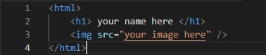

go to GitHub's website. Here's a link.
github.comCreate a GitHub acount clinking the sign up butten.
click on your acount icon on the to right of your screen. next click new repositroies.
to add a repositroies write your "username.github.io".
open "Visual Studio Code" and add this code.
after step 5 save the code go back to GitHub look for " uploading an existing file" theb click it it should look like this.

click "commot changed" it'll be a green butten.
After this step you should be all set.